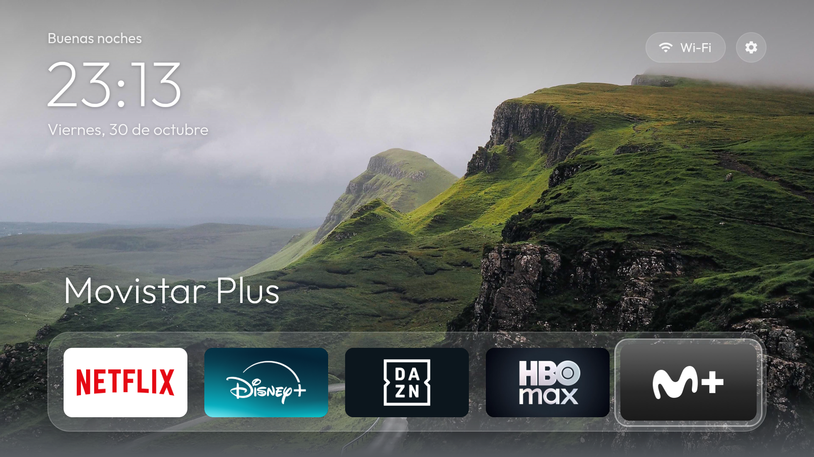

QuickAccess TV en Android TV

En Android TV, QuickAccess TV sustituye a la pantalla de inicio: el botón Inicio del mando la abre
directamente. Id de la app: com.quickaccesstv.app.
Probado en: Android TV 14 (API 34). Admite desde Android 6.0 (API 23).
Requisitos
- Android TV 6.0 o superior con depuración por red activada: Ajustes → Preferencias del dispositivo → Información → pulsa 7 veces Compilación, y después Opciones para desarrolladores → Depuración por USB / por red.
- PC con JDK 17, Android SDK (platform-tools y build-tools) y bash (en Windows, Git Bash).
El script busca el JDK en
$JAVA_HOME17y el SDK en$ANDROID_HOME; si no están definidos, los busca en~/android-build/jdky~/android-build/sdk.
Instalar
adb connect <ip-de-la-tele>:5555 # acepta el aviso que aparece en la tele
TV=<ip-de-la-tele>:5555 ./android/build-and-install.sh
El script copia la interfaz común en el APK, lo compila, lo instala, la fija como pantalla de inicio
(cmd package set-home-activity) y la abre. También concede el permiso de ubicación, que Android
exige para mostrar el nombre de la red Wi-Fi.
Si al pulsar Inicio aparece la pantalla original, elige QuickAccess TV cuando Android pregunte qué app usar, o desactiva el launcher original con la limpieza opcional de abajo.
Limpieza opcional del sistema (debloat)
debloat/ desactiva apps del sistema que no hacen falta: telemetría, recomendaciones con publicidad y
el launcher original. Se desactivan con pm disable-user, nunca se desinstalan, así que todo se puede
deshacer.
cd android-tv/debloat
TV=<ip-de-la-tele>:5555 tools/disable.sh com.google.android.tvlauncher # desactiva y lo anota en disabled.list
TV=<ip-de-la-tele>:5555 ./restore.sh # vuelve a activar todo lo de disabled.list
disabled.list incluye una lista de ejemplo, con telemetría y recomendaciones de Google y apps
preinstaladas. Revísala antes de aplicarla, porque depende de cada aparato. tools/disable.sh se niega
a desactivar paquetes del núcleo del sistema.
Otras herramientas:
tools/tv.sh '<comando>': ejecuta un comando en la tele.tools/shot.sh <archivo.png> [TECLAS]: pulsa teclas del mando y guarda una captura.tools/adb-closed.sh <ip>: comprueba que la depuración por red ha quedado cerrada.
Desinstalar
TV=<ip-de-la-tele>:5555 android-tv/debloat/restore.sh # si usaste la limpieza: recupera el launcher original
adb -s <ip-de-la-tele>:5555 uninstall com.quickaccesstv.app